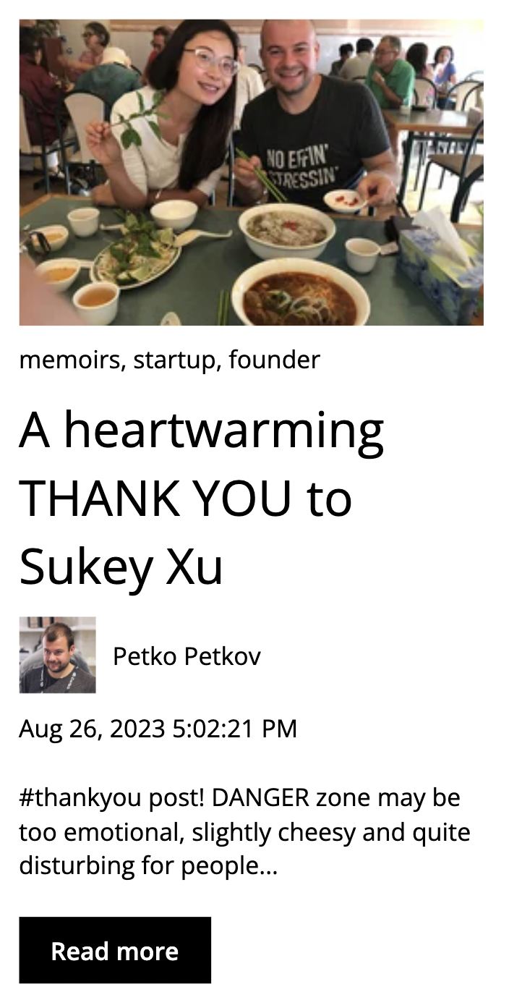
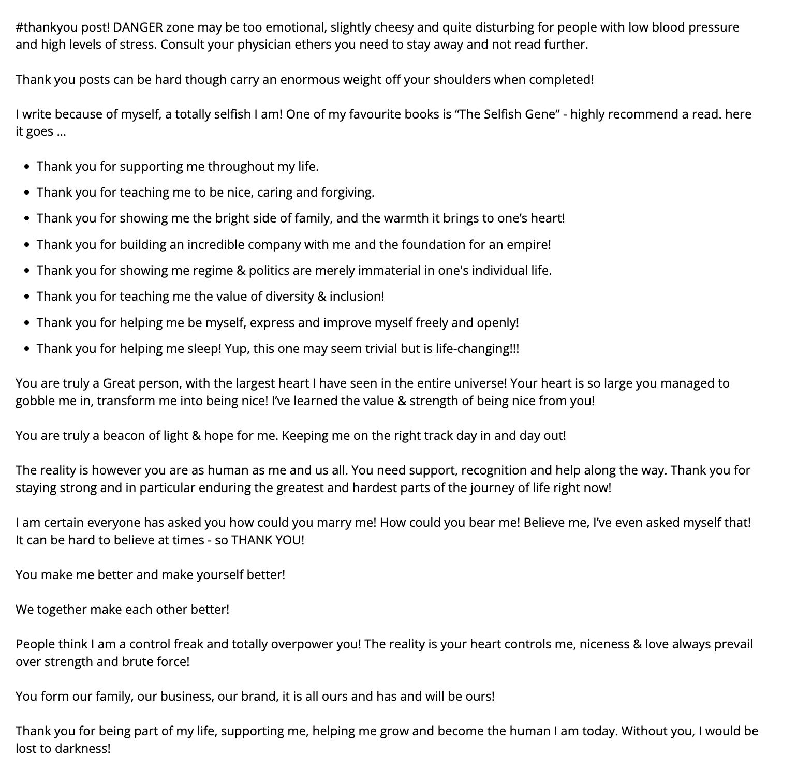

This is the 2nd for today. But quite honestly, the last one was supposed to be posted last 24 May but I was too tired.
I’ve been thinking a lot about this topic today. I don’t know why. I have a lot to say about this and stories to share. I guess I’ll just start:
I really don’t know how to start this properly with an opening line. I’ll just write what’s on my mind right now and hope it makes sense.
Lately, I’ve been reflecting a lot about myself (as seen from my previous prompts). In this one, there will be two things I want to reflect on: to love, and to be loved.
I never quite figured out what it means to love someone. Back then, I was a full-on avoidant. I avoided expressing any sort of intimacy with people. Yes, I wanted to love, to be embraced; but the idea of commitment just scared me. Maybe it’s because I’ve learned enough from my mom’s previous abusive relationships that I have to be sure of it? Maybe because I keep hearing this stories from friends about their partners and sometimes I would just think: “Ugh but that’s so much work I would rather focus on studying.” Whenever I would find myself talking to a girl, I would always toe the line in-between being friends vs. being “something else” so much that I think some of them get frustrated waiting on me.
My think my idea of love is quite mature. I know that it’s not supposed to be perfect. I know that it’s not always sunshine and rainbows. I know that there will be tough times ahead. In Ateneo, we had this one Theology Class which centers around love, family, and vocation. I never quite truly get this course to it’s true potential when I was learning it at that time because I was an avoidant. But somehow I always remember our readings from M. Scott Peck. For all the wisdom Ateneo taught me, this is one that I am most grateful for: “Love is the will to extend one's self for the purpose of nurturing one's own or another's spiritual growth... Love is as love does. Love is an act of will -- namely, both an intention and an action. Will also implies choice. We do not have to love. We choose to love.”
I would highly recommend reading more on Scott Peck.
I always tell people: “Love isn’t about the connection we will to have with other people. Love is about choosing someone to face life’s difficulties, together.” I don’t exactly know where I got this quote, but I won’t be surprised if I found it through one of my readings of Scott Peck.
Somehow, I carried those quotes with me towards after college. Until I felt I was ready to finally try it. And when it did, I stayed true to that philosophy. To choose someone. To make each other a better person. To face life difficulties together. It’s as simple as that.
Earlier this month, I found myself watching (500) Days of Summer. I hate this movie with a burning passion - not because it’s a bad movie, but because the movie went totally against my entire philosophy of what it means to love. “This is not a love story. This is a story about love.” What an excellent pitch I should say!
I have a whole rage-filled Lettterboxd review on this. To summarize, an insecure guy who, to be honest, cares more about himself, puts himself in this sort of fantasy that love is the answer to all of his problems. This seems innocent at first, but to take loving as this sort of like game that people play is a massive red flag. Anyone who thinks this way is rebranded type of f*ckboy - and trust me that I met countless of people like this during High School. The girl, on the other hand, is just as terrible. I don’t want to dwell on that but just look it up!
The central theme of what Scott Peck taught me about love is that it has to be a selfless act. You recognize a person for who he/she is. You love them as a whole and choose them. It’s a long process. True love is not something that you immediately know instantaneously. It entails a deep understanding which needs time and the capacity to make a couple be bare with each other. There must be loving from both parties to have this sort of understanding.
I’m not saying I’m perfect though. Like I said, I was heavily an Avoidant back then. I distrusted people and my inability to truly love someone disallowed me from truly forming a connection with them.
During college, I would say I had three “almost-a-relationship” scenarios where, if I just dared to cross that line, I would have had a relationship with someone. Each of them settled with someone eventually, while only one of them is still going strong.
The first one, I constantly labelled as toxic. She was from my English Class during Freshman Year and her block mate was a mutual friend from High School. One-day she just messaged me first and we just started talking there. Unfortunately, being close to her blockmate and some other friends, I keep on hearing rumors that she was toxic. By toxic, I mean backstabbing even the closest friends she has. I had my guard up all the time. English Class was always the first class in the morning. She would bring me food - sometimes, she would even write hearts on something I’m reading. She even told our mutual friend: “Do you know that feeling that someone may like you.” But me being an avoidant took it as her being just friendly. I refused to believe that there was actually something. Eventually, I was going through something really hard during the second semester. I had issues. We got off. She messaged me again one day (I forgot what we talked about). Kind of dated afterwards despite me having reserved feelings. Then something happened again then we stopped talking. Part me believes that she just got really frustrated.
Somehow, one of her biggest crush also happened to like her and they got on shortly after we stopped talking. Loving is letting go. I guess this was the first time I had to do this. Surprisingly, they are really strong. They went to the same medical school together and have been together for more than 5 years at this point.
She had her own issues. The toxic accusations does have some truth to it. But I guess she was just waiting for someone to change her. Maybe she was hoping it will be me and she saw that in me, but I never had the courage to take that leap. I’m happy who she ended up with. The guy is really kind. He was intelligent and smart during college. He also has priorities. He wasn’t the *f*ckboy* type. She’s probably the only one I’m happy went off with a different person.
The second one, honestly we could’ve been something but our conversations were strictly just the friendly-type. Maybe she was hoping I would take a leap, but I didn’t do so obviously. We went to La Union together and she sent me a playlist which she said is for another guy - but deep-down, I felt it was for me. I still follow it and play it from time-to-time.
Her case is the classic case of just because you found the spark, connection, and shared interest with another person doesn’t mean that he’s the one. He met a guy who looks well accomplished, intelligent, and a geek - much like her. They both like really thinking things through, creating data, researching documents; just to arrive in a data-based conclusion. They share the same life advocacies, interests, etc. Six months into the relationship, the guy literally did a cost-benefit analysis whether she should go her or some other girl. He chose her and they were together for another Eighteen months. She said the break-up didn’t feel like one, and more of a resignation letter. Anyways, weird guy and I feel sorry for her to have to go through that.
Like what Scott Peck said, Love is a choice. If someone happens to have to choose between you or someone else while being in a relationship with said person; run. It’s selfish. You’re never the priority.
For the last one, I actually told her that I may be developing feelings for her. She helped me through COVID and was the only person who was ever truly there - even though it was all online. Unfortunately, the moment I told her, I didn’t know what to make of it. Once more, I’m scared what she’ll think of me if she did try to know me. So I forgot about it and never bought it up.
Someone else was courting her then. He was a family-friend of hers. He was honestly a bit cringy and sometimes sound desperate. She would always send to me his chat messages to him and she said that it looked funny. But the guy really tried, quite honestly. She went to her house in the province during her birthday, and even booked the same flight when she had to fly to Manila. I applauded her effort but deep-down I felt that it’s weird. Maybe I just can’t wrap my head around dedicating your entire being just for one person. Or going above and beyond just to seek someones approval. Yeah it’s sweet, but what if you did get the approval and things get rough? What happens then to the fantasy you made in your head. But it’s true, if there’s ever someone which reminds me of the guy from (500) Days of Summer, it would be that guy.
Anyway, I felt she was just waiting for me to bring it up again before she actually tries with that guy. (I guess 500 Days of Summer courting tactics work.) One time, in a literal group chat, she was sharing stories about the guy and I told her to just go for it. That it’s kind of sweet that she’s doing that for you. She had to ask me twice if I was sure. I said yes. And she did start actually dating that guy.
As expected though, if someone’s really desperate for you and puts you in the center of their world - it’s a red flag. They only care about their relationship status or your presence. They eventually got off after one or two years.
Yeah, so that’s my avoidant self back then. I don’t know how I healed from it or how I changed. Maybe it’s just western values seeping into my personality now - but I eventually know, I have to at least try someday, right?
I did. I tried opening myself to it. I tried knowing what it means to truly love someone. I still believe in Scott Peck. I don’t believe in the perfect person. I believe in the person who will choose me. I believe in the person who will see through my bullsh*t, choose me, and be happy to go through life’s harshness together.
One such case which really shifted my perspective is my business mentors here in Australia. They both own the business and work together to build it. The fact that they own and operate the same business is a massive red flag already because of all the complications that come with it. The guy is Bulgarian while the girl is Chinese.
Knowing with the Bulgarian Guy, it always baffles me how him and his wife ended up together because they are literally day and night. The guy is a control-freak - he always believes that everything he says is right. It’s difficult to change his mind too. The girl is your typical reserved asian. I honestly feel that if I were the girl, I would be suffocating having him as my partner.
But they’ve been together probably for 12 years at this point.
It still baffles me. But I saw this heart-warming post that my mentor did in his family office site and that’s when Scott Peck’s words start ringing again.


They uplift each other.
As simple as that. Yes, they do have arguments - my mentor tells me that they go through couples therapy. That’s expected.
But they choose one another in the end. They choose to face life difficulties of raising a child, running a business, and owning a dog - together.
They don’t need to have to be from the similar culture or share the same interests. They just choose one another.
It’s beautiful. I’m really happy and forever lucky to have met them and know what living actually means.
I guess after I first met them 2024 of May, my perspective of life and love started to shift.
I’m more open and sincere with myself compared to who I was during High School and College. I’m no longer afraid making myself bare to someone.
After all, if she’s the “one,” she’ll choose you for who you are; not your interests, money, or status. If she doesn’t, then that’s okay too. At least you loved truly. It hurts, yes. But you’re able to realize early on that that person isn’t worth spending a lifetime with.
Be sincere. Follow your heart. Make those silly little mistakes.
The right person will choose you.
That’s what it means to love and be loved.
My mentors chose to trust me because they saw something in me. They trusted their house, their dog, and their business to me because of something with myself I really cannot understand. They showed me a life and love which I never really knew back in the Philippines.
And for that, I’m really grateful.